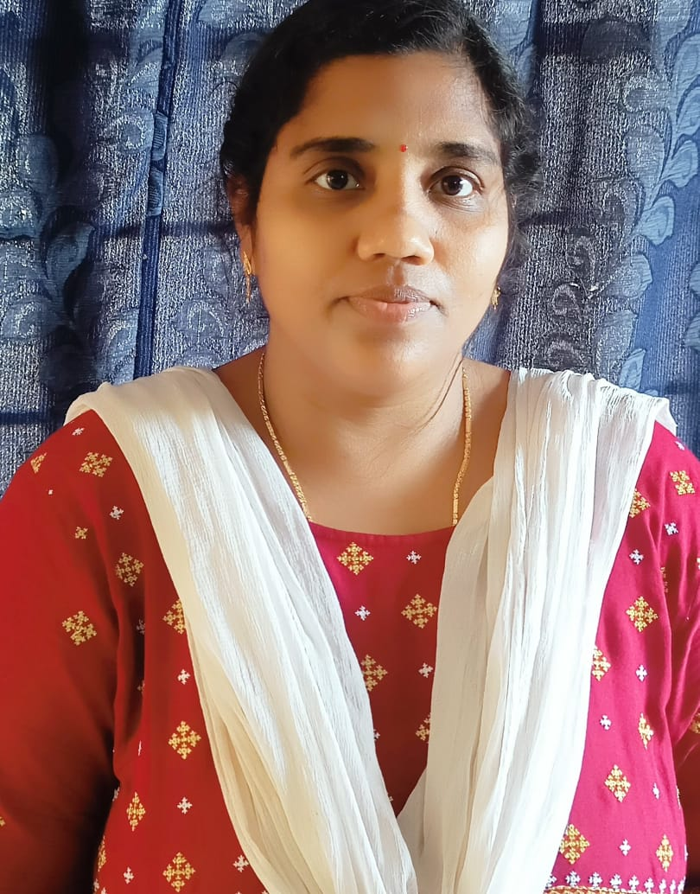

About Community Service Project
1. Community Service Project is an experiential learning strategy that integrates meaningful community service with instruction, participation, learning and community development.
2. Community Service Project involves students in community development and service activities and applies the experience to personal and academic development.
3. Community Service Project is meant to link the community with the college for mutual benefit. The community will be benefited with the focused contribution of the college students for the village or local development. The college finds an opportunity to develop social sensibility and responsibility among students and also emerge as a socially responsible institution.
Members of the Team
| Pin no |
Name |
| 20551A4649 |
S YAGNESWAR |
| 20551A4638 |
N PAVAN KUMAR |
| 21555A4605 |
U V GANI DURGA |
| 20551A4618 |
G KARUNA KUMAR |
Our Beloved Mentor

| K Suryakala |
Assistant Professor |
GIET(Autonomous) |